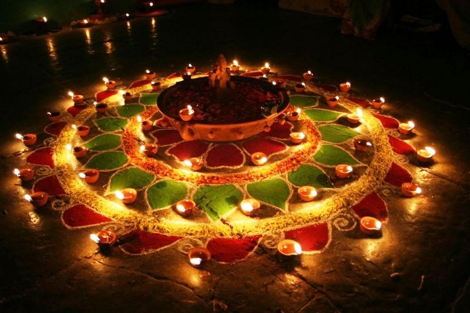
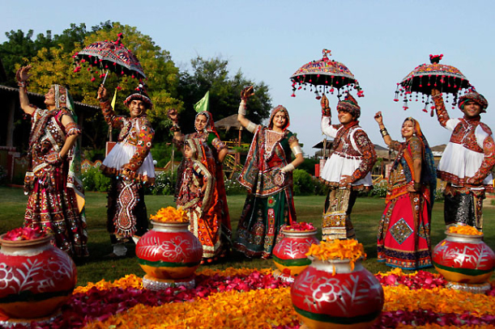
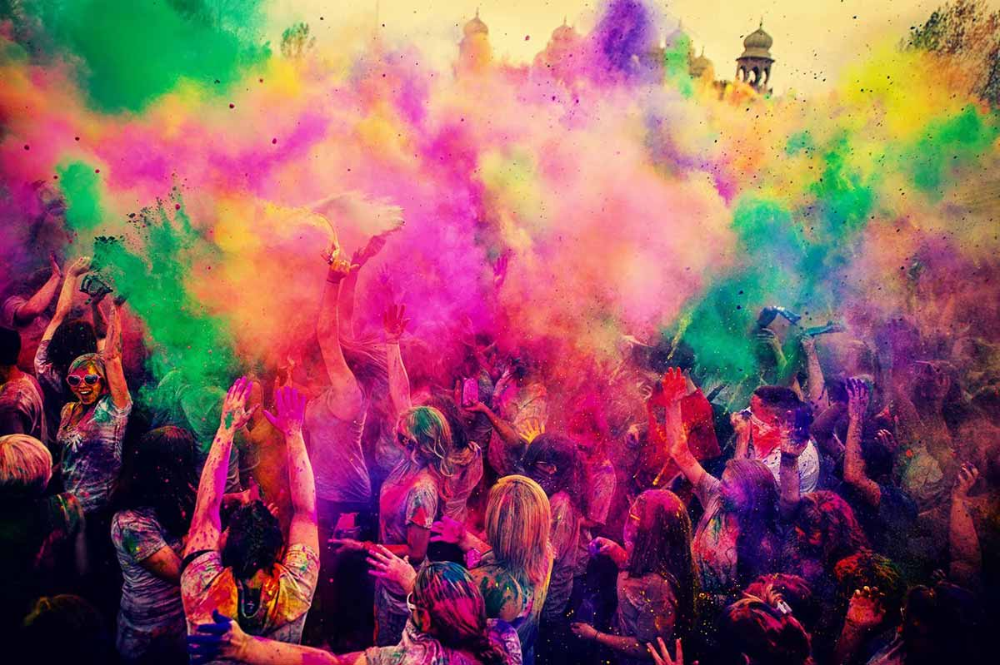

"Deepavali" is a Sanskrit word - Deepa meaning light and Avali, meaning a row. It means a row of lights and indeed illumination forms its main attraction. It symbolises that age-old culture of India which teaches us to vanquish ignorance that subdues humanity and to drive away darkness that engulfs the light of knowledge. Diwali, the festival of lights even to-day in this modern world, projects the rich and glorious past and teaches us to uphold the true values of life.
Gujarat’s Navratri Festival, is “a circle of ecstasy” that throbs non-stop for nine nights with millions of fantastically costumed devotees swaying in a fusion of dance and devotion. Although this festival is celebrated throughout India, nowhere is it performed with more panache and fervor than in Gujara
Gujarat celebrates Holi with colors of love, colors of life. Festival of colors, Holi is celebrated with great fanfare in the Gujarat state of India. Holi is celebrated on the full moon day in the month of Phalguna. It is a major Hindu festival and marks the agricultural season of the Rabi crop.
